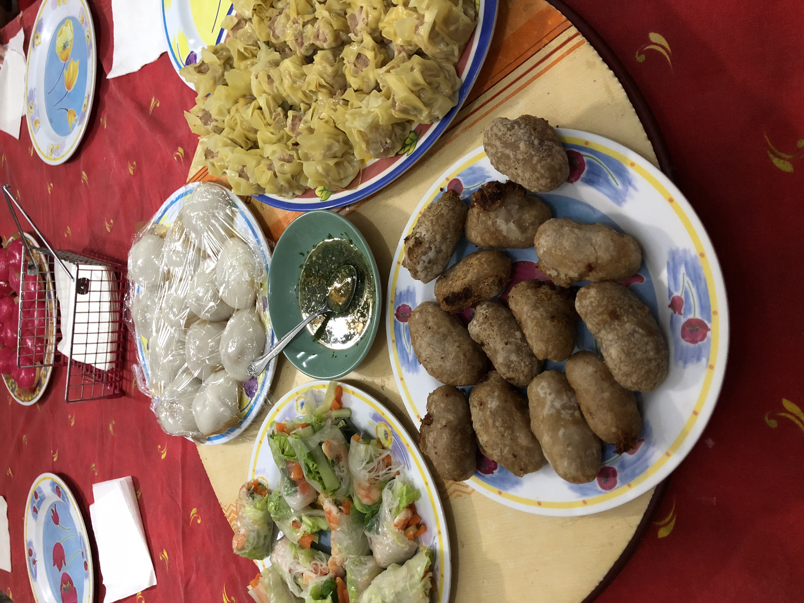

General presentation
My full name is Stephanie Poerava Li Ming Lilin. I am 19 years old and I was born and raised on the island of Tahiti, in French Polynesia.
Find out more about my home townFamily
I am the oldest sibling in my family. I have one younger brother whose name is Steven. He is 16 and he is in his last year of high school. My parents are both Chinese. However, they were born in Tahiti and they are 4th or 5th generation immigrants. On my mother’s side, all family members live in Tahiti. As a result, I almost see them everyday and we are very close. My father’s family lives in New Caledonia. Despite the distance, we try to keep in touch via calls and emails. We sometimes fly to Noumea to visit my grand parents on special occasions. Moreover, I also have family living in France, in the United States and in Hawaii.
I grew up around Chinese community and traditions. Every year, for the Chinese New Year celebrations, the whole family gathers for a gigantic feast. We cook a myriad of delicious Chinese specialties such as dumplings, roast duck, char siu, braised pork, steamed fish and so on.
Learn how to make traditional Chinese dumplings
Education
I went to La Mennais high school in Papeete. After graduating, I decided to pursue my studies at UTS Insearch.

Several factors impacted my decision. First of all, there are only a few options of university courses offered in Tahiti. But none of them was matching with my career choice. Therefore, I decided to explore overseas options. I wanted to study overseas because I believed that it would give me experience and maturity. Besides, I have always loved travelling and discovering new places. Australia was a great choice for me as it is relatively close from home. Also, studying in Australia gives me the opportunity to practise my English skills which is a valuable asset in today’s society.
Hobbies
I like to spend my free time reading adventure books and mystery novels.
I like to immerse in the story and soak up the atmosphere described in
the book as I progress in the chapters. Once, I was able to finish a
book in only 2 days. No sooner had I started reading the first words of
the book than I could not let go of it. In my childhood, I also
practiced multiple extracurricular activities such as tennis, swimming,
chess, pottery, dance, gymnastics, and judo. I really enjoyed trying out
all of these, but along the years I took a higher interest in dancing,
especially ballet.
I also like to listen to music a lot.

It often allows me to relax after a busy day at school for example. I
listen to various styles of music, from the last pop trend to the
classical opera pieces. I like to extend my musical repertoire and to
discover new pieces. My favourite instrument to listen to is piano. I
find the sound of this instrument very versatile as it can be powerful
and emphatic but also soothing and mellifluous. Among the pianists that
I admired,
Yiruma
is probably one of my favourite. He composed and played a piece called
River Flows in You
which I really love and which you can listen to by clicking
here.
You can learn more about my favourite activities to do by
clicking here.
10 random facts about me
- I can speak 4 languages: French, English, Spanish and Mandarin.
- I am a French citizen.
- My favourite food is pasta with pesto.
- My biggest pet peeves is people talking with their mouth full.
- As a little girl, I wanted to be a ballet dancer when I grew up.
- My zodiac sign is Aquarius.
- My biggest fear is termites.
- I believe in the superstition that opening umbrellas indoors brings bad luck.
- My drink of choice is Sencha green tea.
- My favourite movie of all time is Kingman 1.